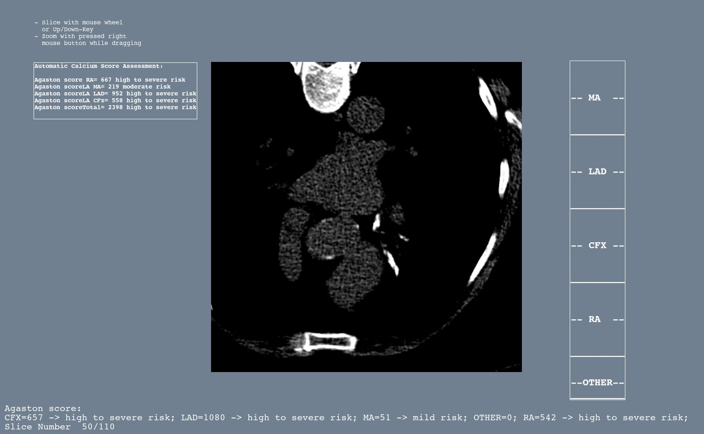
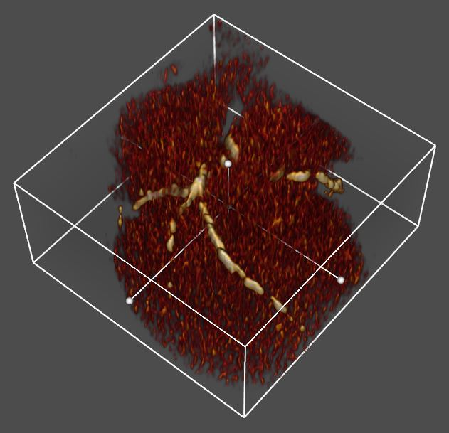
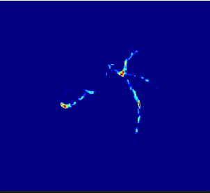

Автоматическая и полуавтоматическая количественная оценка коронарного кальция
Разработан очень быстрый и надёжный алгоритм подсчёта индекса Агастона. В дополнение к нему также имеется соответсвующая полуавтоматическая методика. Автоматический метод обычно даёт более точные результаты. Это объясняется сложностью идентификации и контроля положения мелких кальцинатов при ручной обработке срезов КТ изображений.

Параллельно с расчётом индекса Агастона вычисляется и визуализируется распределение кальция в коронарных артериях:
Пространственное распределение кальция в коронарных артериях |
Распределение кальция в коронарных артериях в проекции на аксиальную плоскость |
|---|---|
|  |  |